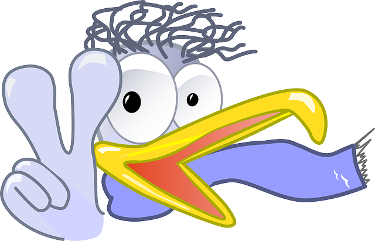
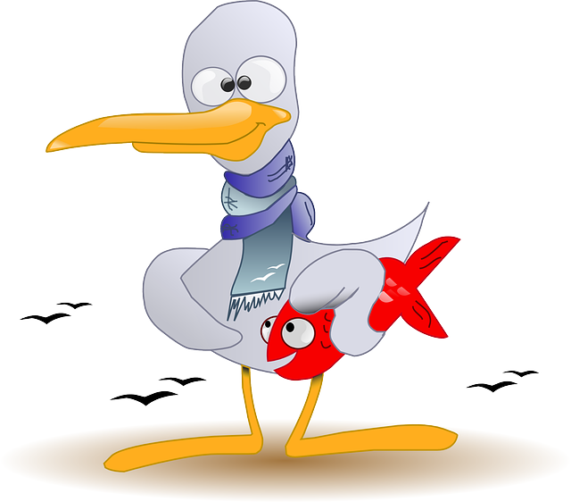
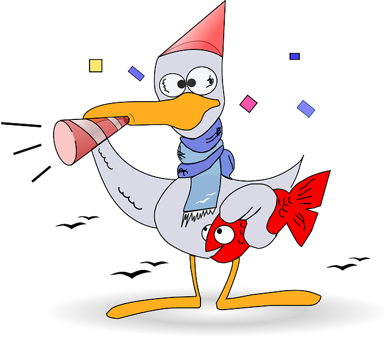

Opiskelemme kaikki toista vuotta tradenomin tietojenkäsittelyä ohjelmistotuotannon puolella. Olemme toteuttaneet Ääniohjaus-sovelluksen osana ohjelmistotuotannon projekti kurssia.
Yksi jäsenistä toimi Scrummasterina sekä teki designia ja auttoi Backend -toteutuksessa. Yksi vastasi Backendistä sekä tietokannsta. Kaksi toteutti sovellusta, toinen Androidille ja toinen iOS:ssälle React Nativella. Kuitenkin, teimme tiiviisti yhteistyötä ja autoimme toisiamme tarvittaessa. Alhaalta löydät pienen koosteen tiimimme jäsenistä sekä tehtävistä.
Toimin Scrum Masterina tässä projektissa ja sen lisäksi tein design puolta. Olin myös apuna backendin teossa.
Toimin tässä projektissa koodarina backendin osalta, minkä ohessa toteutin tietokantaa ja testausta backendille.
Toimin tässä projektissa koodarina ja olin vastuussa sovelluksen Android versiosta sekä projektissa käytettyjen apuskriptien ohjelmoijana.
Toimin tässä projektissa koodarina ja olin vastuussa iOS versiosta sekä autoin myös muita backendissä.
Kuvat peräisin: Pixabay